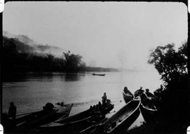

presents
Peter Hutton
Images of Asian Music (A Diary from Life 1973-74)
16mm, 29 minutes, 1974

"IMAGES OF ASIAN MUSIC represents footage compiled during 1973-74 when Peter Hutton was living in Thailand and working at sea as a merchant seaman. While the film is silent, the title was intended to evoke a comparison to the movement of classical Asian music. IMAGES OF ASIAN MUSIC is a personal celebration of Asia formed by a sensitivity to filmic composition and to the perception of these images in a silent time created by the filmmaker." --Whitney Museum of American Art
"...The camera records a ship working out of Thailand, the faces of the seamen, the sea, a storm, fireworks, a big snake coiling exploratorily about a young girl, the huge Buddha in the lotus position and landscapes and skyscapes reminiscent of the film work of Satyajit Ray. It is beautiful, mute, and meaningful in the silence." --Archer Winston, New York Post
Lodz Symphony
16mm, 20 minutes, 1991-3
A portrait of Lodz, Poland that exists in a timewarp of sad memory. Hutton creates an empty world evoking the 19th century industrial atmosphere that is populated with the ghosts of Poland's tragic past.
Leighton Pierce
Glass
16mm, 7 minutes, 1998
A not-so-still-life in the back yard with children, water, fire, and a few other basic elements. This is another contemplative painterly piece in Leighton Pierce's on going "Memories of Water" series. While the ultimate effect is intended to be poetic (and maybe even transformative), it is simultaneously a study in the laws of optics--an exploration of refraction, diffraction, diffusion, reflection, and absorption. --Leighton Pierce
A window pane is a paradox of sorts, as it unifies two opposing functions. On the one hand it separates the 'inside' from the 'outside while the two spaces still remain visually connected. Glass, like water, can also flow, and both substances also share the qualities of transparency, refraction, and reflection. It is in this last quality that 'inside' and 'outside' can merge into one image. The accompanying crystal clear soundtrack, which ranges from a groaning swing to a crackling fire, very effectively contrasts the diffuse qualities of "Glass." --Arjon Dunnewind IMPAKT Festival Catalog 1998 (Utrecht, The Netherlands).
Awards: Best Cinematography--Ann Arbor and tour, Juror's Choice (top award)--Black Maria, Cash Award-- Athens
Selected Festival Screenings: New York Film Festival, European Media Arts Fest and tour (Germany), Impakt and tour (Netherlands), Ann Arbor (tour), Athens, Black Maria, etc.
Red Shovel
16mm, 8 minutes, 1992
A narrow angle of view, closely watched, on the Fourth of July.
Red Shovel is an impressionistic documentary focussing on a few moments in a small town along the coast of Maine on the Fourth of July (American Independence day). The approach to image is very painterly with the simple view transformed "with Turneresque luminosity." Most of the unusual visual effect is from the careful use of a shallow depth of field and natural objects (blowing grass, bushes, etc.)to bend and twist the images into a languid sense of time. In the end the film documents a state of mind more than a particular spot. It also resonates with the ambiguous metaphoric threat of a national symbol impinging upon the child's toy.
Festivals and Awards: Marin County 1994 First Place IMPAKT Festival (Netherlands) 1993 Osnabrück Media Arts Festival 1993 AVE Festival (Netherlands) 1993 MediaWave, Györ, Hungary Ann Arbor Film Festival Cash Award Humboldt Film Festival Black Maria 1993 Juror's Award Sinking Creek 1993 Kodak Cinematography Award Bucks County 1992 Cash Award
Screenings also at the American Museum of the Moving Image, The National Gallery of Art, Flaherty Film Seminars, etc.
Jon Jost
Canyon
16mm, 5 minutes, 1970
A single view of the Grand Canyon, seen over one day. I had been to the Canyon, hiked to the bottom, shot material which was useless, and returned several years later knowing I had nothing to say about the Grand Canyon, but that it should speak for itself.
Saturday October 2nd, 3.30pm. Donations appreciated.
Call Joss for more information and details on how to get to this month's Eiga Arts: 090-7165-999